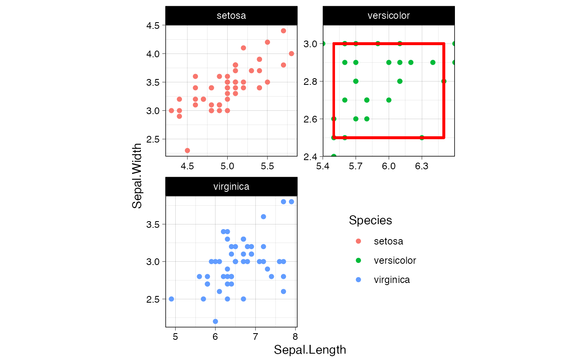

任意のfacetパネルをズームする.
coord_panel_ranges(panel_ranges, expand = TRUE, default = FALSE, clip = "on")Limits of axes or an axis.
Add margin to each axes or an axis, Default: TRUE
Is this the default coordinate system? If FALSE (the default),
then replacing this coordinate system with another one creates a message alerting
the user that the coordinate system is being replaced. If TRUE, that warning
is suppressed. NOTE: This argument explanation was cited from ggplot2::coord_cartesian
Should drawing be clipped to the extent of the plot panel? A
setting of "on" (the default) means yes, and a setting of "off"
means no. In most cases, the default of "on" should not be changed,
as setting clip = "off" can cause unexpected results. It allows
drawing of data points anywhere on the plot, including in the plot margins. If
limits are set via xlim and ylim and some data points fall outside those
limits, then those data points may show up in places such as the axes, the
legend, the plot title, or the plot margins. NOTE: This argument explanation
was cited from ggplot2::coord_cartesian
ggproto object
See vignette("coord_panel_ranges")
https://andburch.github.io/ggplot_facets https://stackoverflow.com/questions/63550588/ggplot2coord-cartesian-on-facets
library(frabento)
library(ggplot2)
library(magrittr)
#>
#> Attaching package: ‘magrittr’
#> The following objects are masked from ‘package:testthat’:
#>
#> equals, is_less_than, not
theme_set(theme_linedraw(base_family = "Helvetica", base_line_size = 0.3) +
theme(aspect.ratio = 1/1, legend.position = c(0.75, 0.25)))
ggplot(iris, aes(x = Sepal.Length, y = Sepal.Width)) +
geom_point(aes(color = Species)) +
geom_rect(data = . %>% dplyr::filter(Species == "versicolor"),
xmin = 5.5, xmax = 6.5, ymin = 2.5, ymax = 3,
color = "red", linewidth = 1, fill = NA) +
facet_wrap(~ Species, scale = "free", ncol = 2) +
coord_panel_ranges(panel_ranges = list(
list(NULL),
list(x = c(5.4, 6.6), y = c(2.4, 3.1)),
list(NULL)
))
